Orgullosos de nuestro Patrimonio Cultural
Museo de Sitio de Chan Chan: meta del 120 % para diciembre de 2026, museos más visitados, demanda de mochilas y factura de Juan.
Abre cada paso en orden. En cada uno tienes qué hacer, un ejemplo resuelto con otros datos (con su captura) y luego «Ahora hazlo con tus datos», donde compruebas tu resultado.
Reglas de la visita
- Usa la columna TOTAL_PAGANTES. Las columnas TOTAL y TOTAL_NOPAGANTES incluyen a quienes no pagaron entrada.
- Cada mes tiene dos filas: una de nacionales y otra de extranjeros. Para el total del mes, súmalas.
- Los visitantes se redondean a personas enteras; los montos en soles, a dos decimales.
Sala 1 · Avance 1
Lunes 16/11 · P4 y P11Descarga la base de datos oficialPara P1, P2 y P3›
Qué haces
- Entra a datosabiertos.gob.pe/dataset/visitas-museos.
- En «Dato y Medio de Distribución», en la fila Dataset - Visitas a museos (CSV), pulsa Descargar (marcado con el 1 en la captura).
- Guarda el archivo y anota la fecha de hoy: va en la fuente de cada tabla y gráfico.
- No lo abras todavía con doble clic: en el paso 5 aprendes a abrirlo sin que se dañen las tildes.
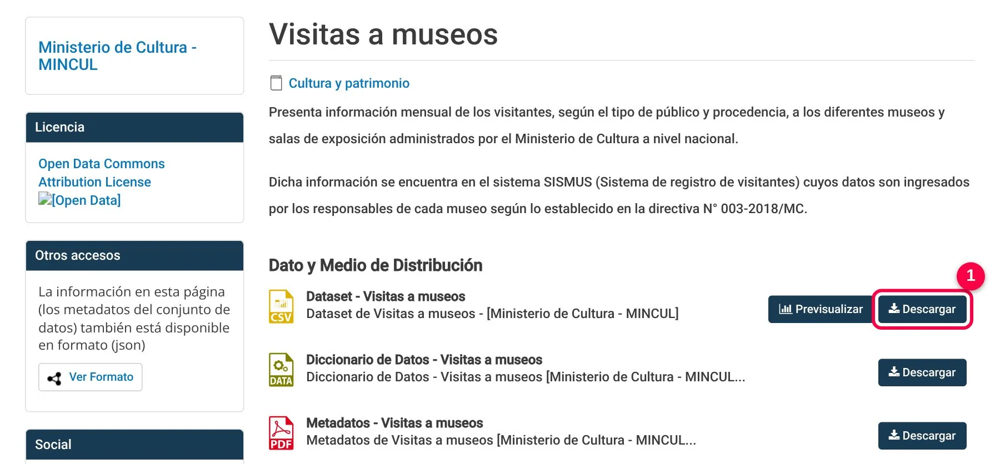
En tu Word
- En referencias: Ministerio de Cultura. (año). Visitas a museos [Conjunto de datos]. Plataforma Nacional de Datos Abiertos. https://www.datosabiertos.gob.pe/dataset/visitas-museos
2Halla la ecuación de la demanda y grafícalaPregunta 4›
Qué haces
- Escribe los dos datos como puntos (Q; P): primero la cantidad, después el precio.
- Pendiente: m = (P₂ − P₁) ÷ (Q₂ − Q₁)En una demanda sale negativa.
- Ordenada: b = P₁ − m·Q₁. Escribe P = mQ + b y comprueba con el otro punto.
- Corte con el eje Q (P = 0): Q = −b ÷ m.
- En Excel arma la tabla de Q y P y haz InsertarGráficoDispersión con líneas rectas.
Feria de zapatillas: a S/ 90 se venden 120 pares y a S/ 75 se venden 180 pares.
- Puntos: (120; 90) y (180; 75).
- m = (75 − 90) ÷ (180 − 120) = −15 ÷ 60 = −0.25
- b = 90 − (−0.25)(120) = 90 + 30 = 120 → P = −0.25Q + 120
- Comprobación: −0.25(180) + 120 = 75 ✓. Corte con eje Q: 120 ÷ 0.25 = 480 pares.
- Lectura: por cada par adicional que se quiere vender, el precio baja S/ 0.25; a S/ 120 nadie compraría.
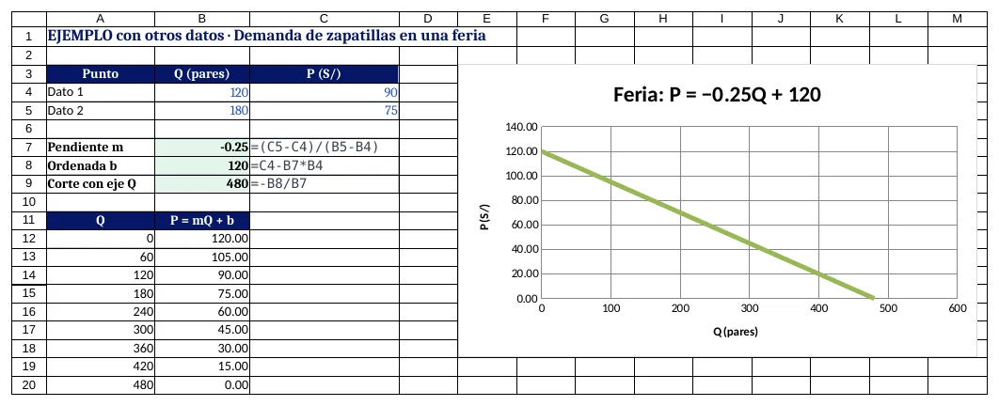
Ahora hazlo con tus datos: las mochilas del caso
En tu Word
- Los dos puntos, la fórmula de m con números y el despeje hasta P = mQ + b.
- Comprobación con el segundo punto.
- Tabla de valores y gráfica con título, ejes y los dos puntos marcados.
- Tres líneas de interpretación: m, b y el corte con el eje Q.
3Diagnostica con los datos del museoPregunta 1, primera parte›
Qué haces
- Abre la base como en el paso 5 y filtra el museo del caso y el año 2025.
- Arma una tabla de 12 meses con TOTAL_PAGANTES de nacionales, de extranjeros y su suma.
- Haz un gráfico de columnas apiladas: InsertarColumna apilada.
- Escribe dos o tres hallazgos con números: ¿diciembre es un mes alto o bajo? ¿cómo están los extranjeros en diciembre frente al mes más alto?
Museo de Sitio Pachacamac (Lima), 2025. Hallazgos que se pueden escribir: setiembre fue el mes más alto (12 291 pagantes) y diciembre uno de los más bajos (3 076); en diciembre llegaron 1 197 extranjeros que pagaron, el 39 % del mes.
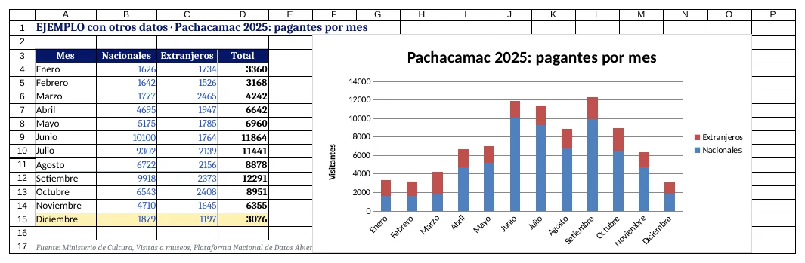
Ahora hazlo con tus datos
- Gráfico mensual de Chan Chan 2025 con su fuente.
- Dos o tres hallazgos con números.
4Diseña tres estrategias y sus bannersPregunta 1, segunda parte›
Qué haces
- Para cada estrategia define: público, canal, acción concreta y meta (visitantes adicionales).
- Las tres metas deben sumar al menos los visitantes que faltan para el 120 % (los calculas en el paso 6).
- Al menos una estrategia debe apuntar a extranjeros, porque la meta pide que sean el 35 %.
- Diseña un banner por estrategia (Canva o PowerPoint, 1600 × 900) con tres capas: mensaje corto, dato verificable y llamado a la acción.
Si a Pachacamac le faltaran 615 visitantes, una tabla resumen bien hecha sería:
| Estrategia | Público | Canal | Meta |
|---|---|---|---|
| Recorrido familiar de verano | Familias de Lima sur | Facebook y TikTok del museo | +250 |
| Paquete Lima arqueológica | Turistas extranjeros | Hoteles de Miraflores y agencias | +230 |
| Visita de fin de año para empresas | Trabajadores de empresas | Correo a áreas de bienestar | +150 |
| Total (debe cubrir lo que falta) | +630 | ||
Banner débil: «Visita el museo. Te esperamos.» No tiene dato ni llamado. Banner bueno: mensaje corto + un dato que se pueda verificar (una fecha, un reconocimiento, una cifra con fuente) + qué hacer y cuándo.
Ahora hazlo con tus datos
- Tabla resumen de tus tres estrategias para Chan Chan, con fila de total.
- Cada estrategia descrita en 3 o 4 líneas.
- Cada banner como «Figura N» con «Fuente: elaboración propia» y el autor de las fotos si usaste alguna.
Sala 2 · Avance 2
Miércoles 18/11 · P25Abre la base en Excel y saca el dato de diciembre de 2025Pregunta 2, dato base›
Qué haces
- Abre un Excel en blanco: DatosDesde texto/CSV y elige el archivo.
- En «Origen del archivo» elige 1252: Europeo occidental (Windows); en «Delimitador», Punto y coma. Pulsa Cargar.
- Activa el filtro: DatosFiltro. Filtra NOM_MUSEO, ANIO = 2025 y COD_MES = 12.
- Quedan dos filas (nacionales y extranjeros). Suma su TOTAL_PAGANTES; no uses TOTAL.
- Con fórmula: =SUMAR.SI.CONJUNTO(R:R; E:E; "nombre del museo"; B:B; 2025; F:F; 12) (R es TOTAL_PAGANTES).
Pachacamac, diciembre de 2025: 1 879 nacionales + 1 197 extranjeros = 3 076 pagantes. Si hubieras sumado la columna TOTAL te saldría 4 129, que incluye a los que no pagaron.
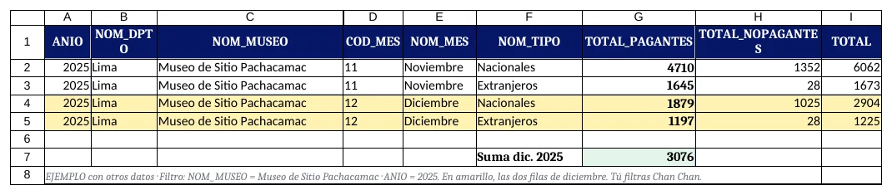
Ahora hazlo con tus datos: Chan Chan
En tu Word
- Tabla con nacionales, extranjeros y total de diciembre de 2025.
- Debajo: «Fuente: Ministerio de Cultura, Visitas a museos, Plataforma Nacional de Datos Abiertos, consultado el (fecha)».
6Proyecta al 120 % y reparte 65 % y 35 %Pregunta 2, proyección›
Qué haces
- Meta 2026 = 1.20 × dato base, redondeado a entero: =REDONDEAR(1.2*B6;0).
- Nacionales = 65 % de la meta, redondeado: =REDONDEAR(0.65*B7;0).
- Extranjeros = meta − nacionales: =B7-B8. Así la suma da exacta.
- Visitantes que faltan = meta − dato base (lo usas en el paso 4).
Pachacamac: 1.2 × 3 076 = 3 691.2 → 3 691. Nacionales: 0.65 × 3 691 = 2 399.15 → 2 399. Extranjeros: 3 691 − 2 399 = 1 292. Faltan 3 691 − 3 076 = 615.
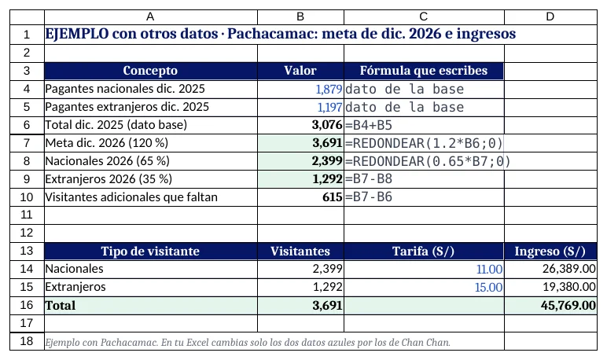
Ahora hazlo con tus datos: Chan Chan
En tu Word
- La operación de la meta con sus números y el redondeo.
- El reparto y la suma de comprobación.
- Un gráfico de columnas: diciembre 2025 frente a la meta 2026.
7Calcula los ingresos por entradasPregunta 2, respuesta›
Qué haces
- Tabla: tipo de visitante, visitantes, tarifa e ingreso, con fila de total (parte baja de la captura del paso 6).
- Comenta qué grupo aporta más y por qué los extranjeros pesan más en soles que en personas.
Pachacamac: 2 399 × 11 = S/ 26 389.00; 1 292 × 15 = S/ 19 380.00; total S/ 45 769.00. Los extranjeros son el 35 % de los visitantes pero aportan el 42 % de los ingresos, porque su entrada cuesta más.
Ahora hazlo con tus datos: Chan Chan
En tu Word
- Tabla de ingresos.
- Recuadro de respuesta: visitantes de diciembre de 2026 (total, nacionales, extranjeros) e ingresos.
- Interpretación de dos líneas.
Sala 3 · Avance 3
Lunes 23/11 · P3, P5 e informe · Exposición 25/118Encuentra los tres museos más visitados en 2025Pregunta 3, ranking y gráfico›
Qué haces
- Haz clic dentro de la base: InsertarTabla dinámicaAceptar.
- Arrastra: NOM_MUSEO a Filas, ANIO a Columnas, TOTAL_PAGANTES a Valores.
- Si aparece «Cuenta de TOTAL_PAGANTES», cámbialo: Configuración de campo de valorSuma.
- Clic derecho en un número de la columna 2025: OrdenarDe mayor a menor.
- Copia los tres primeros con sus valores de 2024 y 2025 a una tabla aparte y haz un gráfico de columnas agrupadas.
Mismo procedimiento, pero solo con los museos de Ayacucho (en la tabla dinámica se pone NOM_DPTO en Filtros y se elige Ayacucho). El primero es el Museo de Sitio Wari.
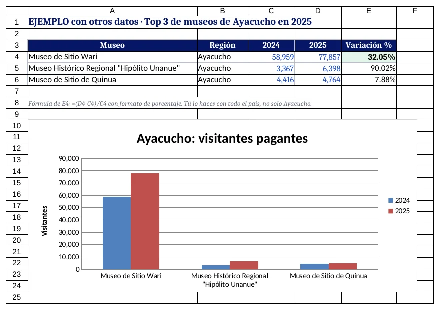
Ahora hazlo con tus datos
- Tabla del top 3 nacional de 2025 con región y valores de 2024 y 2025.
- Gráfico de columnas agrupadas con título, ejes, etiquetas y fuente.
9Calcula la variación porcentual del más visitadoPregunta 3, variación›
Qué haces
- Se divide siempre entre el valor inicial (2024).
- En Excel: =(D4-C4)/C4 con formato porcentaje y dos decimales.
- Positivo = subió; negativo = bajó.
Museo de Sitio Wari: (77 857 − 58 959) ÷ 58 959 × 100 = 32.05 %. «El museo más visitado de Ayacucho en 2025 fue el Museo de Sitio Wari y sus visitantes pagantes aumentaron 32.05 % respecto a 2024».
Ahora hazlo con tus datos: el más visitado del país
En tu Word
- Procedimiento de la tabla dinámica en 3 o 4 pasos.
- La variación con su fórmula y una frase de interpretación.
10Emite la factura de JuanPregunta 5›
Qué haces
- Los precios ya incluyen IGV: para sacar el valor sin IGV divides entre 1.18; no sumes 18 % encima.
- Valor unitario: =REDONDEAR(C4/1.18;4). Valor de venta de cada línea: =REDONDEAR(B4*C4/1.18;2).
- Op. gravada = suma de valores de venta. IGV = 18 % de la op. gravada. Total = op. gravada + IGV.
- Comprueba: el total debe ser igual a la suma de cantidad × precio que pagó el cliente.
Tienda ficticia: 4 llaveros a S/ 11.80 y 1 libro de fotos a S/ 59.00 (precios con IGV).
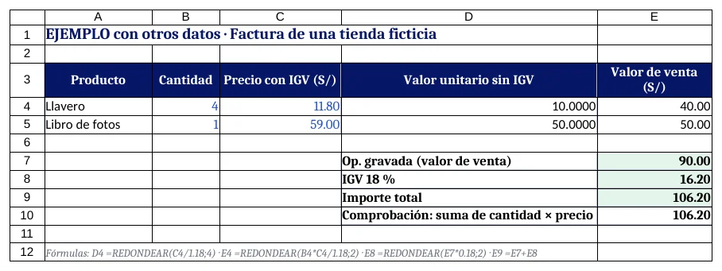
Dirección de la tienda
Cliente: (nombre del cliente) · RUC (11 dígitos)
Fecha · Moneda: soles
FACTURA ELECTRÓNICA
F001-000001
| Cant. | Unidad | Descripción | Valor unitario | Precio unitario | Valor de venta |
|---|---|---|---|---|---|
| 4 | Unidad | Llavero | 10.0000 | 11.80 | 40.00 |
| 1 | Unidad | Libro de fotos | 50.0000 | 59.00 | 50.00 |
| Op. gravada | 90.00 | ||||
| IGV 18 % | 16.20 | ||||
| Importe total | 106.20 | ||||
Ahora hazlo con tus datos: la compra de Juan
En tu Word
- Tabla del cálculo del valor unitario y del valor de venta.
- La factura como tabla o imagen, indicando que RUC y número son ficticios.
- Comprobación del total en una línea.
11Arma el informe y prepara la exposiciónEntrega 23/11 · Exposición 25/11›
Orden del informe (Word)
- Carátula: institución, carrera, curso, «Evidencia AA2, Caso 2», integrantes, docente, NRC y fecha.
- Índice automático: ReferenciasTabla de contenido.
- Introducción: qué pide el caso, la meta y la fuente de datos.
- P1 a P5: procedimiento, tabla o gráfico numerado con fuente y recuadro de respuesta.
- Conclusiones (una por pregunta) y referencias en APA 7.
- Anexo: el Excel con las fórmulas.
Exposición de 7 minutos
| Minuto | Qué se presenta |
|---|---|
| 0:00–0:45 | Equipo, museo y meta del 120 % |
| 0:45–2:15 | P1: diagnóstico, estrategias y banners |
| 2:15–3:30 | P2: dato base, meta e ingresos |
| 3:30–4:45 | P3: top 3 y variación |
| 4:45–6:00 | P4: ecuación e interpretación |
| 6:00–7:00 | P5: factura y conclusión |
Preguntas que hará el docente
- ¿Por qué usaron TOTAL_PAGANTES y no TOTAL?
- ¿Qué significa que la pendiente sea negativa?
- ¿Por qué el IGV no es el 18 % de lo que pagó Juan?
- ¿Entre qué valor dividieron la variación porcentual?
Emprendimiento y educación financiera
Andrés ahorra en CrediBank para abrir su óptica en Arequipa y luego pide un préstamo. Calculas su saldo, comparas tasas y hallas el último pago.
Abre cada paso en orden. En cada uno tienes qué hacer, un ejemplo resuelto con otros datos (con su captura) y luego «Ahora hazlo con tus datos», donde compruebas tu resultado.
Regla de oro de CrediBank
Todas las tasas son efectivas anuales. Cuando el tiempo está en meses, el exponente es meses ÷ 12: (1 + TEA)^(meses/12). Nunca dividas la TEA entre 12. Trabaja con todos los decimales y redondea a dos solo el resultado final.
Regalo 1 · Avance 1
Lunes 30/11 · P1, línea de tiempo y P41Diferencia la TEA, la TREA y la TCEAPregunta 1›
Lo que tienes que saber
| Tasa | Se usa en | Qué incluye | Para qué sirve |
|---|---|---|---|
| TEA | Depósitos y créditos | Solo el interés, con capitalización, expresado al año | Comparar tasas de distinto periodo |
| TREA | Depósitos (ahorro, plazo fijo, CTS) | Interés menos comisiones y gastos | Saber cuánto gana realmente el ahorrista |
| TCEA | Créditos y préstamos | Interés más comisiones, seguros y gastos | Saber cuánto cuesta realmente el préstamo |
Idea clave: si una cuenta no cobra comisiones, TREA = TEA. En un crédito, la TCEA siempre es igual o mayor que la TEA.
Ahora hazlo con tus datos
- Entra a la web oficial de una entidad y busca su tarifario, «cartilla de información» o «fórmulas y ejemplos».
- También sirve el reporte de tasas de la SBS (sbs.gob.pe, «Tasas de interés promedio»).
- Anota para cada tasa: entidad, producto, valor, enlace y fecha de consulta.
En tu Word
- La tabla comparativa.
- Un ejemplo real de cada tasa con fuente y fecha.
- Una conclusión: qué tasa mira Andrés para ahorrar y cuál para endeudarse.
2Dibuja la línea de tiempo del ahorroPregunta 2, primera parte›
Qué haces
- El 0 es el día en que abre la cuenta; cada marca es un mes.
- Depósitos con flecha hacia abajo (entran a la cuenta); retiros hacia arriba (salen).
- Marca los tramos (meses entre un movimiento y el siguiente).
- Puedes hacerla en PowerPoint, en Excel con formas o a mano y escaneada.
Lucía abre una cuenta con TEA de 6 %: deposita S/ 5 000 en el mes 0, retira S/ 1 000 en el mes 3, deposita S/ 3 000 en el mes 6 y retira todo en el mes 12.
Ahora hazlo con tus datos
- Dibuja la línea de tiempo de los 20 meses de Andrés con todos sus movimientos y los tramos marcados.
3Investiga la TREA de tres entidades en ArequipaPregunta 4, primera parte›
Qué haces
- Elige tres tipos distintos con agencias en Arequipa: un banco, una caja municipal y una financiera o caja rural.
- En la web oficial busca el depósito a plazo fijo en soles y su TREA para un plazo cercano a un año.
- Si puedes, confirma con el reporte de tasas de la SBS. Guarda enlace y fecha: las tasas cambian cada mes.
| Entidad | Tipo | Producto | Plazo | TREA | Enlace y fecha |
|---|---|---|---|---|---|
| Banco Ejemplo | Banco | Depósito a plazo fijo | 360 días | 4.50 % | bancoejemplo.pe · 25/11/2026 |
| Caja Ejemplo | Caja municipal | Plazo fijo | 360 días | 7.00 % | cajaejemplo.pe · 25/11/2026 |
| Financiera Ejemplo | Financiera | Depósito a plazo | 360 días | 5.00 % | sbs.gob.pe · 25/11/2026 |
Ahora hazlo con tus datos
- La misma tabla con tres entidades reales que atiendan en Arequipa. En el paso 7 le agregas el tiempo.
Regalo 2 · Avance 2
Miércoles 2/12 · P2, P3 y P44Calcula el saldo tramo por tramoPregunta 2, monto retirado›
Qué haces
- En Excel, una fila por movimiento: mes, movimiento, monto, meses del tramo, saldo antes y saldo después.
- Saldo antes: =F7*(1+$B$4)^(D8/12). Saldo después: =E8+C8 (el retiro va con signo negativo).
- El saldo antes del último movimiento es lo que se retira.
- Comprueba llevando cada flujo por separado a la fecha final y sumándolos: debe darte lo mismo.
| Mes | Cálculo | Saldo antes | Movimiento | Saldo después |
|---|---|---|---|---|
| 0 | Depósito inicial | — | +5 000.00 | 5 000.00 |
| 3 | 5 000 × 1.06^(3/12) | 5 073.37 | −1 000.00 | 4 073.37 |
| 6 | 4 073.37 × 1.06^(3/12) | 4 133.14 | +3 000.00 | 7 133.14 |
| 12 | 7 133.14 × 1.06^(6/12) | 7 344.02 | Retira todo | 0.00 |
Lucía retira S/ 7 344.02. Aportes netos: 5 000 − 1 000 + 3 000 = 7 000; intereses: S/ 344.02. Comprobación: 5 000 × 1.06^(12/12) − 1 000 × 1.06^(9/12) + 3 000 × 1.06^(6/12) = 7 344.02 ✓
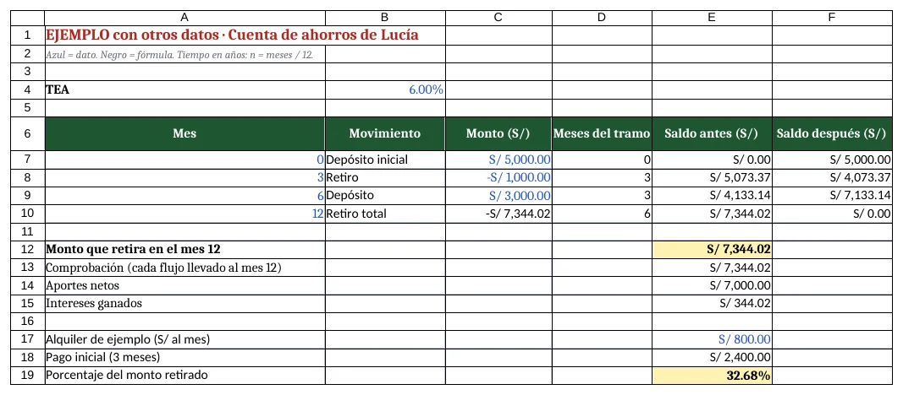
Ahora hazlo con tus datos: la cuenta de Andrés
En tu Word
- Tabla de tramos con la operación de cada uno.
- Recuadro con el monto del mes 20 y los intereses ganados.
- La comprobación en una línea.
5Investiga el alquiler y calcula el porcentajePregunta 2, alquiler›
Qué haces
- En urbania.pe o adondevivir.com busca: alquiler, local comercial, Arequipa, entre 20 y 60 m², primer piso.
- Guarda precio mensual, distrito, área, enlace y fecha.
- Pago inicial = 3 meses (1 de adelanto + 2 de garantía).
Si Lucía alquila un local de S/ 800 al mes: pago inicial 3 × 800 = S/ 2 400 → 2 400 ÷ 7 344.02 × 100 = 32.68 % de lo que retiró. Le queda dos tercios para lo demás.
Ahora hazlo con tus datos: el local que investigaste
6Despeja la TEA equivalente con un solo depósitoPregunta 3›
Qué haces
- C = aportes netos y S = monto retirado.
- En Excel: =(B5/B4)^(12/B6)-1 con formato de porcentaje.
- Comprueba: C × (1 + TEA)^(meses/12) debe dar S.
- Compárala con la TEA de la cuenta y explica la diferencia.
Lucía: (7 344.02 ÷ 7 000)^(12/12) − 1 = 4.91 %. Es menor que 6 % porque en un solo depósito todo el dinero gana intereses todo el año; en la cuenta real, S/ 3 000 entraron recién en el mes 6.
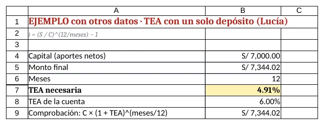
Ahora hazlo con tus datos: Andrés, 20 meses
7Calcula cuánto tarda en cada entidad y recomiendaPregunta 4, segunda parte›
Qué haces
- En Excel: =LN($B$5/$B$4)/LN(1+B8)*12. También sirve =NPER(TREA;0;-C;S)*12.
- Agrega a tu tabla del paso 3 dos columnas: meses y diferencia frente al plazo original.
- Haz un gráfico de barras con los meses de cada entidad.
- Recomienda una entidad y menciona el Fondo de Seguro de Depósitos y las condiciones de retiro anticipado.
Lucía (C = 7 000, S = 7 344.02): con 7 % tarda ln(7 344.02 ÷ 7 000) ÷ ln(1.07) × 12 = 8.5 meses; con 5 %, 11.8; con 4.5 %, 13.1. La de mayor TREA llega antes.
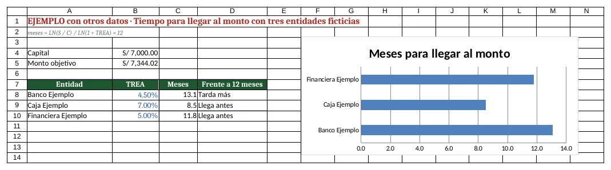
Ahora hazlo con tus datos: Andrés y tus tres entidades
Regalo 3 · Avance 3
Lunes 7/12 · P5 e informe · Exposición 9/128Plantea la ecuación de valor y halla el último pagoPregunta 5›
Qué haces
- Dibuja la línea de tiempo del préstamo y marca la fecha focal en el mes del último pago.
- Lleva todo a la fecha focal multiplicando por (1 + TEA)^(meses que faltan/12). X ya está en la fecha focal.
- Iguala: deuda llevada = pagos llevados + X, y despeja X.
- Comprueba trayendo todos los pagos (con X) al mes 0: debe darte el préstamo.
Préstamo de S/ 10 000 a TEA de 20 %; pagos de S/ 4 000 en el mes 6, S/ 4 000 en el mes 12 y X en el mes 18. Fecha focal: mes 18.
13 145.34 = 4 800.00 + 4 381.78 + X → X = S/ 3 963.56. Comprobación en el mes 0: 4 000 ÷ 1.2^(6/12) + 4 000 ÷ 1.2 + 3 963.56 ÷ 1.2^(18/12) = 10 000 ✓
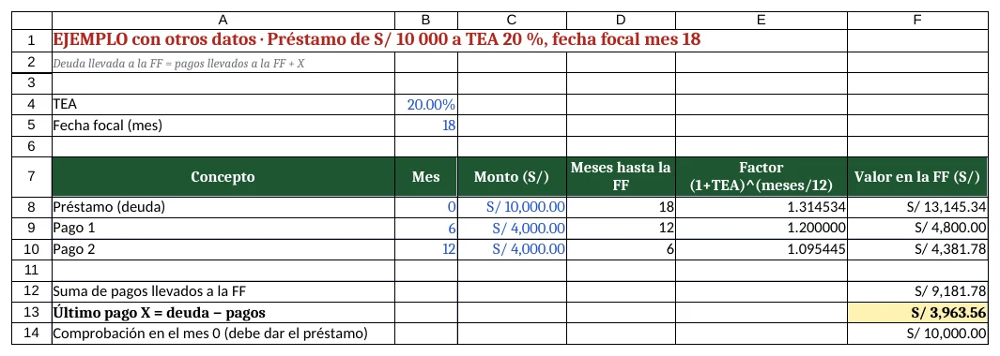
Ahora hazlo con tus datos: el préstamo de Andrés
En tu Word
- Línea de tiempo con la fecha focal marcada.
- Ecuación de valor con todos los factores.
- Tabla, valor de X y comprobación.
- Total pagado e intereses, con una línea de interpretación.
9Arma el informe y prepara la exposiciónEntrega 7/12 · Exposición 9/12›
Orden del informe (Word)
- Carátula: institución, carrera, curso, «Evidencia AA3, Caso 3», integrantes, docente, NRC y fecha.
- Índice automático.
- Introducción: la situación de Andrés y qué se resuelve.
- P1 a P5 con procedimiento, tabla o gráfico con fuente y recuadro de respuesta.
- Conclusiones y una recomendación final para Andrés.
- Referencias en APA 7 (con fecha de consulta de cada tasa) y anexo con el Excel.
Exposición de 7 minutos
| Minuto | Qué se presenta |
|---|---|
| 0:00–0:45 | Andrés, su meta y el equipo |
| 0:45–1:45 | P1: TEA, TREA y TCEA con ejemplos |
| 1:45–3:15 | P2: línea de tiempo, monto y alquiler |
| 3:15–4:15 | P3: TEA equivalente |
| 4:15–5:30 | P4: entidades y recomendación |
| 5:30–7:00 | P5: ecuación de valor y conclusión |
Preguntas que hará el docente
- ¿Por qué no dividieron la TEA entre 12?
- ¿Por qué la TEA de la pregunta 3 es menor que 4.6 %?
- ¿Qué entidad recomiendan y por qué?
- ¿Cuánto paga Andrés en total por el préstamo y cuánto es de intereses?